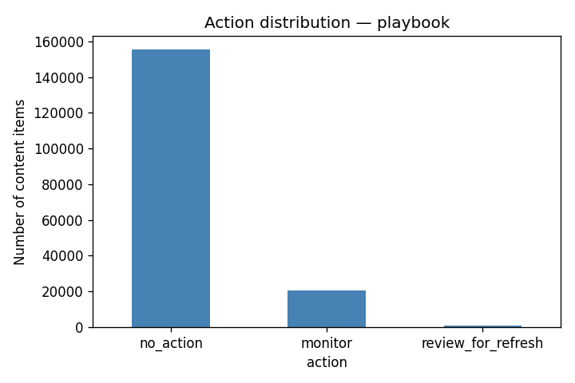

Abstract
We ask whether a learned model can prioritize content refresh candidates better than a hand‑written rule using only search performance and content metadata from a single month. The analysis uses 9.8 million daily search rows from March 2026, aggregated to 176,000 content‑item records with features such as age, impressions, CTR, average position, and engagement signals. A Random Forest model trained on these features and evaluated on a client‑grouped held‑out split achieves Precision@50 of 0.56, compared with 0.04 for the Week‑4 baseline rule — a 52‑percentage‑point improvement. The model output is converted into a ranked action queue with reason codes, intended to help a content strategist decide which pages to review first. All findings are directional and decision‑support only; no production claims are made.
1. Introduction / Problem statement
Decision supported: Which pages should a content strategist review for refresh first, given limited editorial time and resources.
Unit of analysis: One content item per client, aggregated over a calendar month.
Output: A ranked list (score) with action labels and reason codes.
Human action: Start at rank 1 and review the page for possible content refresh, metadata updates, or consolidation. Do not automate actions; every recommendation requires human judgment.
Cost of a wrong call: A false positive wastes editorial time on a page that does not need a refresh; a false negative lets a declining page go unnoticed, risking further traffic loss.
Why data/ML helps: The signal space (age, impressions, position, CTR, engagement) is small and interpretable, but a simple rule cannot capture non‑linear interactions. A learned model can combine these signals more flexibly and produce a calibrated risk score.
2. Data
Release: FlyRank internship warehouse (Hugging Face FlyRank/internship-warehouse).
Tables used: fact_content_daily_performance (partitioned, month=2026-03), dim_content.
Date window: March 1–31, 2026 (mid‑panel). The sealed month=2026-06 and _sample were never used.
Excluded:
- Rows with missing
content_created_date(age cannot be computed). - Rows with zero impressions (no signal).
- GA4 metrics where
ga4_data_availableis false. - Any client or URL identifiers – kept hashed; no raw names or URLs appear.
Public safety: All content is pseudonymized; only aggregate statistics are reported.
3. Methodology
Assumptions: The proxy label (is_declining_proxy) — a ≥20% drop in impressions in the last 15 days vs. the prior 15 days — is a reasonable signal of content decay. March 2026 is representative.
Features: content_age_days, impressions_month, ctr_month, avg_position_month, engagement_rate_month, has_ga4_month, word_count, has_word_count.
Label definition: is_declining_proxy = 1 if impr_prev15 > 0 and impr_last15 < 0.8 * impr_prev15, else 0. Label ingredients are never used as features.
Baseline: Week‑4 rule: score = (content_age_days ≥ 180) * (impressions_month ≥ 500) * impressions_month.
Validation design: Grouped split by client_hash_id (70% train, 30% test) to prevent leakage. Same split for baseline and model.
Leakage checks: No overlap between features and label ingredients or product flags.
4. Results (vs baseline)
Performance on a held‑out set of 15 clients:
| Model | Precision@20 | Precision@50 | AUROC |
|---|---|---|---|
| Baseline rule | 0.00 | 0.04 | 0.500 |
| Random Forest | 0.55 | 0.56 | 0.649 |
Test base rate = 0.269
The Random Forest beats the baseline by 52 percentage points at Precision@50. This is directional evidence, not production proof.
Feature importance

5. Limitations
- Proxy label: Within‑month decline, not true future decay.
- Single month: March 2026 only; no seasonal or algorithm‑update testing.
- Client‑grouped split reduces but does not eliminate dataset bias.
- No content‑quality signals: The model flags risk, not content accuracy.
- No causal claims: All associations are observed.
6. Ranked recommendations
The full ranked queue is available as work/outputs/w07_action_queue.csv. The top 10 items are shown below.
Action labels:
review_for_refresh– top decile risk + ≥500 impressions.monitor– high risk low traffic, or moderate risk visible.no_action– low risk or invisible.
How to use: Start at rank 1 and review downward. Every item must pass a human check before any action.

7. Reproducibility
Environment: Colab with DuckDB, scikit‑learn 1.3+, pandas 2.0+, numpy 1.24+, matplotlib 3.7+.
Random seeds: random_state=42 for all splits and models.
Commands:
git clone https://github.com/ozair247/flyrank-ml-internship
# Open work/notebooks/capstone.ipynb in Colab and run all cells.Metrics JSONs are committed in work/outputs/ for verification.
Built on the FlyRank ML Internship dataset — https://flyrank.ai